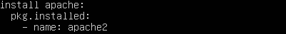
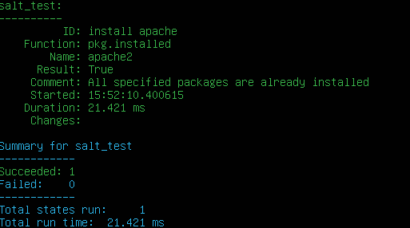
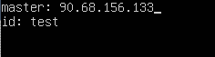
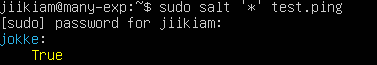
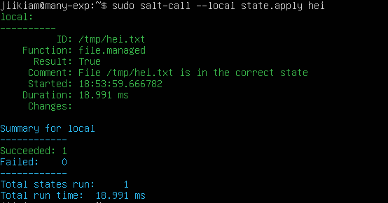

Käytän salttia ubuntu serverillä 22.04.1. Serverin alustana toimii virtual box.
x)
1)
-Perus komentoja linuxissa liikkumiseen, tiedostojen muuttamiseen ja ssh:n käyttö.
-Tärkeiden direktoryjen tehtävät.
2)
-Salt master slave alkeet.
-Slave kontrolli.
3)
-Raportin kirjoittaminen eli kai se mitä tässä teen.
-Pyrkii tekemään selkeää jälkeä, jotta muut voivat toistaa tekemäni asiat.
-Viittauset kuntoon.
a) sudo salt-call --local state.single pkg.installed name=vim
Vim asentui koneelleni saltilla.
b) Siirryin /srv/salt kansioon.
Loin hei.sls kansion
sudoedit hei.sls
Kirjoitin tiedostoon
/tmp/hei.txt:
file.managed:
- source: salt://hei.txt
Loin hei.txt
sudoedit hei.txt
Kirjoitin tiedostoon
HEI MAAILMA!
Menin kotihakemistooni
cd
Laitoin saltin toteuttamaan
sudo salt-call --local state.apply hei
Tarkistin toteuttiko salt haluttuja asioita
cat /tmp/hei.txt
output:
HEI MAAILMA!
c) Haluan nähdä paikalliset dns tiedot
sudo salt-call --local grains.item dns
Listaan paikalliset dns tiedot
e) /srv/salt kansioon tein ssh.sls tiedoston
tiedostoon kirjoitin
ssh:
service.running:
- enable: True
Menin kotihakemistoon ja suljin ssh:n
sudo systemctl stop ssh
Tarkistin, että ssh on pois päältä
sudo service ssh status
Active: inactive (dead), selvästi pois päältä. Yritetään käynnistää saltilla.
sudo salt-call --local state.apply ssh
Tarkitetaan kävikö mitään.
sudo service ssh status
Active: active (running) since 8s ago
Pääsin haluttuun lopputulokseen.
Lähteet:
https://www.youtube.com/channel/UCuE6FxD86hgHhh_l5bK-1VQ/videos
https://terokarvinen.com/2018/salt-states-i-want-my-computers-like-this/
https://terokarvinen.com/2018/salt-quickstart-salt-stack-master-and-slave-on-ubuntu-linux/
x)
Salt quickstart:
Master-slave arkitehtuurin perusteet. Neuvoja arkkitehtuurissa alkuunpääsyyn.
Understanding saltstack:
Artikkeli listaa saltin perusominaisuuksia. Esimerkiksi salt kommunikointi ja sen perustoiminta,
Skaalautuvuus, etähallinnointi jne.
Saltstack fundamentals:
Artikkeli käy läpi saltin asentamisen ja peruskomentoja. Miten kohdentaa komentoja tietylle mini-
onille tai ryhmälle. sls tiedostojen luominen ja state.apply. top.sls toiminta. state.apply ilman
parametrejä aloittaa highstaten=top.sls
Saltstack configuration management: functions:
Artikkeli listaa eri salt state funktioita ja käy läpi niiden toimintaa.
a)
Siirtyminen salt kansioon
cd /srv/salt
Uuden kansion luominen
mkdir h2a
Siirtyminen kansioon
cd h2a
Tiedoston luominen
sudoedit h2a.sls
Kirjoittaa seuraavat komennot kansioon:

Ajetaan saltilla luoma tiedosto haluamille minioneille tai kaikille ’*’:
sudo salt ’omat_minion’ state.apply h2a.

Näytti menneen läpi. Tarkistus toisella koneella: kuva. Lopputulos oli haluttu.
b) Asennetaan salt herra.
sudo apt update
sudo apt-get install salt-master
hostname -I, josta nähdään masterin sijainti eli Ip-osoite.
Asennetaan salt minion samalle koneelle.
sudo apt-get install salt-minion
Kerrotaan minionille masterin sijainti ja nimetään minion.
sudoedit /etc/salt/minion

Testataan näkyykö minion
sudo salt ’*’ test.ping

Nyt herra-orja arkkitehtuuri on asennettuna samalle koneelle.
c) Ajetaan paikallisesti komento:
sudo salt-call --local state.apply hei

Ajetaan paikallisesti komento:
sudo salt-call --local state.apply hei -l debug
 Debug tulos kertoo mitä vaiheita komento toteuttaa.
d) Kone 1.
Avataan palomuuriin reitit masterille:
sudo ufw allow 4505/tcp, sudo ufw allow 4506/tcp
sudo apt update
sudo apt-get install salt-maste
hostname -I, josta nähdään masterin sijainti eli Ip-osoite.
Kone 2.
sudo apt update
sudo apt-get install salt-minion
Kerrotaan minionille masterin sijainti ja nimetään minion.
sudoedit /etc/salt/minion
Testaan yhteys sudo salt ’*’ test.ping
Nyt eri koneille asennettu herra ja orja sekä ne ovat yhteydessä toisiinsa.
Debug tulos kertoo mitä vaiheita komento toteuttaa.
d) Kone 1.
Avataan palomuuriin reitit masterille:
sudo ufw allow 4505/tcp, sudo ufw allow 4506/tcp
sudo apt update
sudo apt-get install salt-maste
hostname -I, josta nähdään masterin sijainti eli Ip-osoite.
Kone 2.
sudo apt update
sudo apt-get install salt-minion
Kerrotaan minionille masterin sijainti ja nimetään minion.
sudoedit /etc/salt/minion
Testaan yhteys sudo salt ’*’ test.ping
Nyt eri koneille asennettu herra ja orja sekä ne ovat yhteydessä toisiinsa.